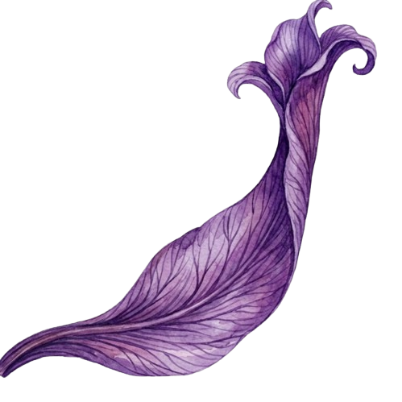
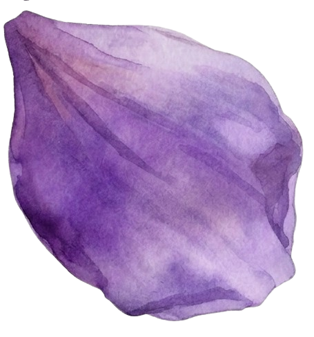
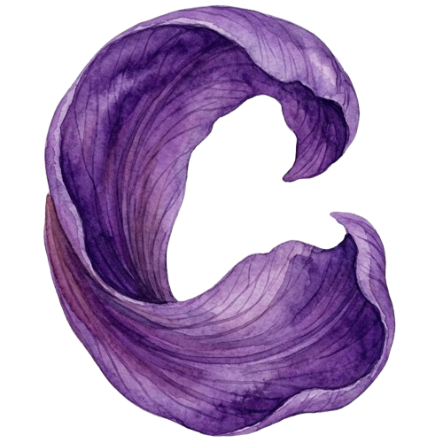
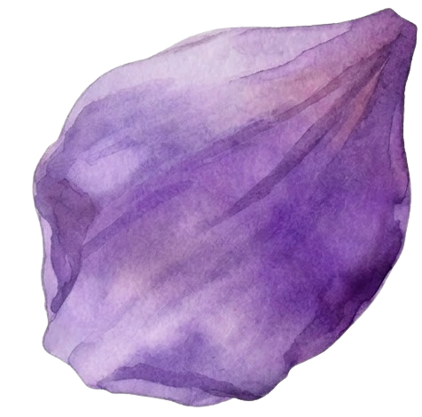
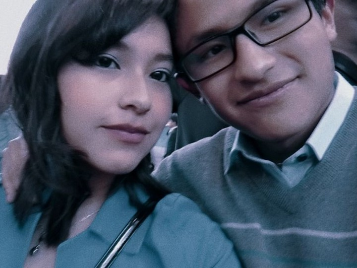

Al principio todo fue muy hermoso, se sentia una vibra muy especial, una sensacion unica que no se compara con nada que haya vivido antes, No debia caer, pero sin darme cuenta ya lo habia hecho.
Fue lo mejor que me habia pasado en la vida, y sabía que sería el inicio de muchos recuerdos que aún me traen felicidad, nostalgia y tambien un poco de melancolía.
Sentados en aquellas gradas, en medio del bullucio de aquel recreo y aún con dudas de que si lo que pasaba era real, te besé y llegó "El Albor" de esta historia.
